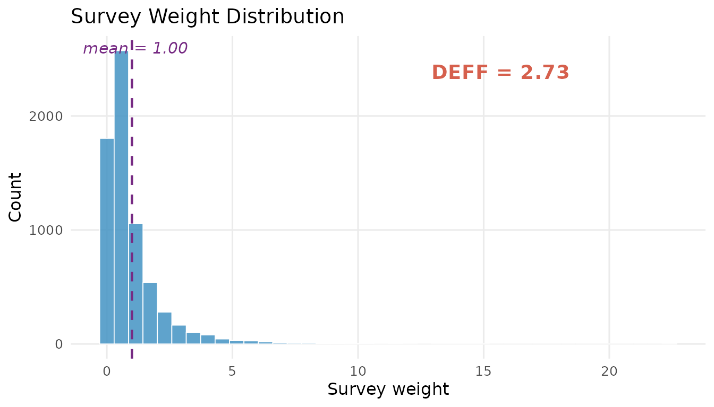
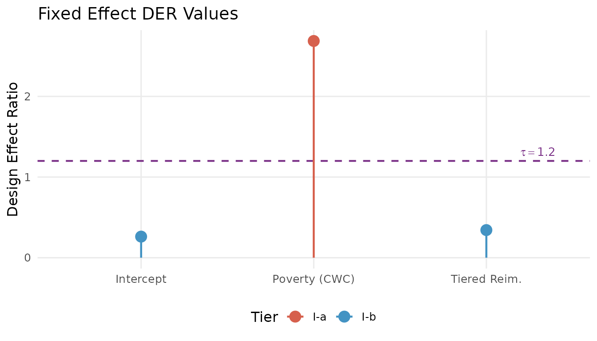
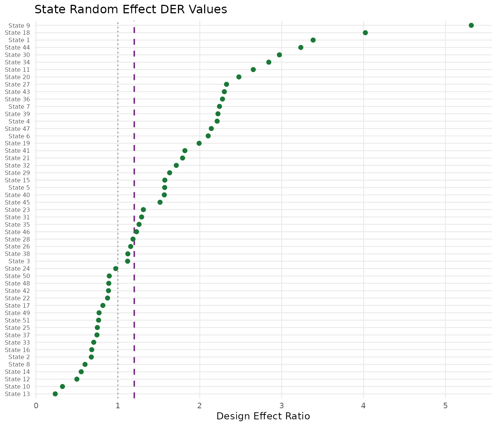
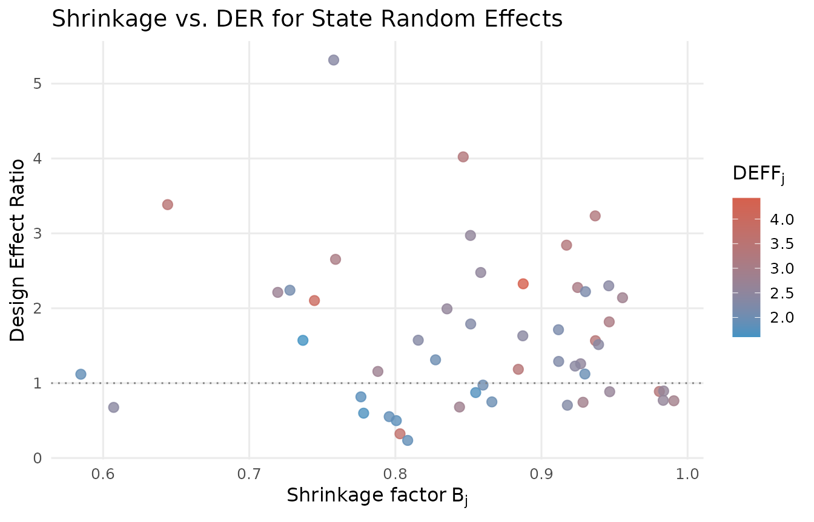
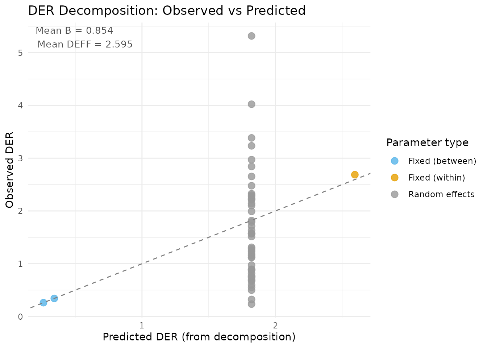
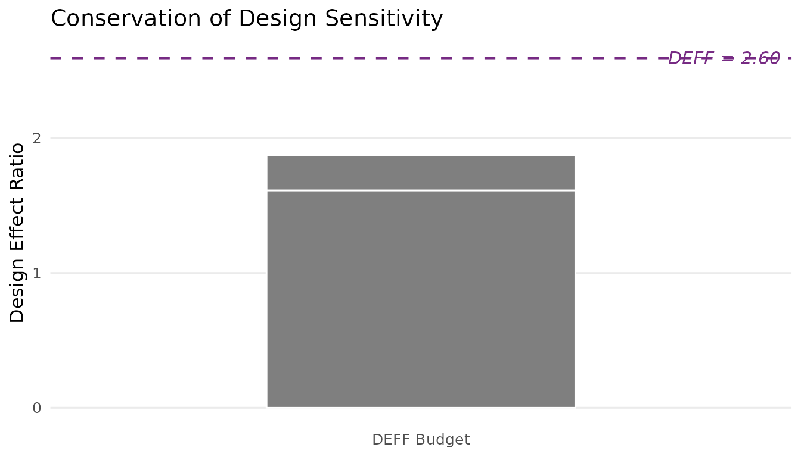
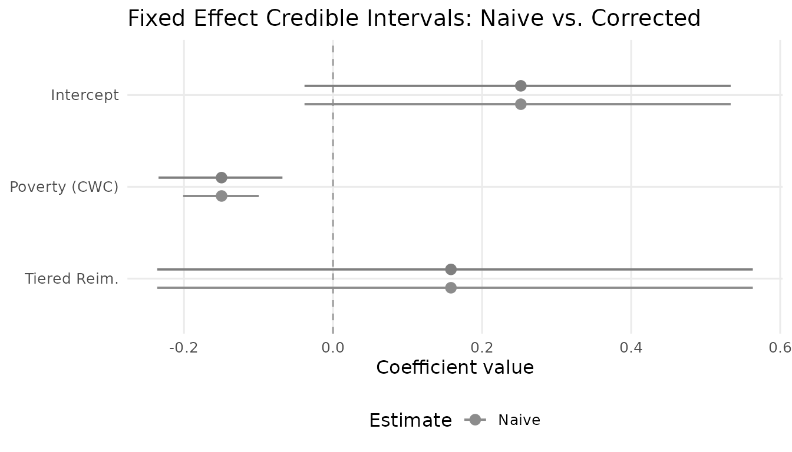
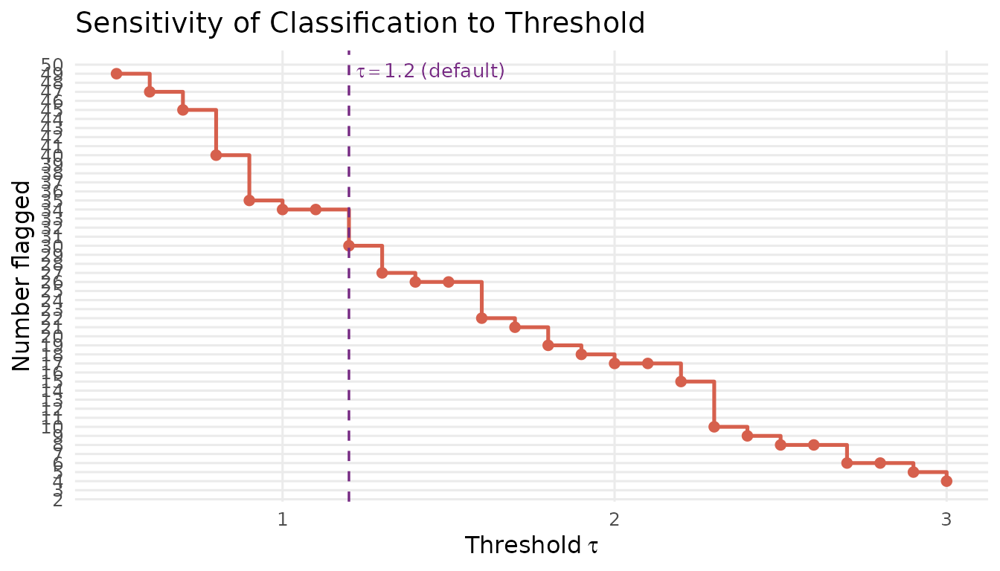
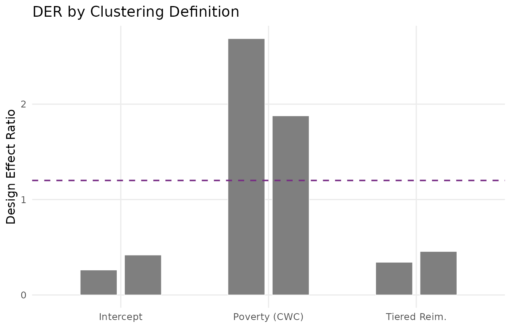

Case Study: NSECE Survey Data Analysis
JoonHo Lee
2026-03-08
Source:vignettes/case-study-nsece.Rmd
case-study-nsece.RmdOverview
This vignette walks through a complete DER analysis on the
nsece_demo dataset, a synthetic dataset modeled after the
2019 National Survey of Early Care and Education (NSECE). By the end,
you will be able to:
- Complete a full DER workflow from data exploration through selective correction.
- Interpret design effects in the context of early childhood policy research.
- Diagnose which parameters are design-sensitive and explain why using the decomposition theorems.
- Apply selective correction and compare it with naive and blanket alternatives.
- Report DER results in a publication-ready format.
The analysis proceeds in seven stages: explore the survey design, run the diagnostic, interpret fixed and random effects, verify the decomposition theorems and conservation law, compare correction strategies, assess sensitivity to the threshold, and format results for publication.
Background: The NSECE Survey
The National Survey of Early Care and Education (NSECE), administered by the U.S. Department of Health and Human Services, is the primary data source for understanding the nation’s childcare landscape. The 2019 wave surveyed childcare providers across all 50 states plus the District of Columbia using a complex multi-stage design:
- Stratification by state ensures adequate representation of each jurisdiction.
- Cluster sampling within states (primary sampling units, PSUs) captures geographic correlation.
- Unequal selection probabilities oversample small states and rare provider types.
The resulting survey weights can vary by a factor of 10 or more,
producing a substantial Kish design effect. The nsece_demo
dataset is a synthetic analog that preserves these structural
features.
data(nsece_demo)| Feature | Value |
|---|---|
| Observations (N) | 6785 |
| States (J) | 51 |
| Fixed effects (p) | 3 |
| Posterior draws | 4000 |
| Parameters (d = p + J) | 54 |
| Family | binomial |
The Research Question
The model examines a binary outcome: whether each childcare provider participates in the state’s Infant-Toddler (IT) quality improvement system. Three fixed-effect covariates enter the hierarchical logistic regression:
- (intercept): overall log-odds of IT system participation.
-
(
poverty_cwc): provider-level poverty, centered within each state. This is a within-cluster covariate: it varies across providers within the same state. -
(
tiered_reim): a binary indicator for whether the state operates a tiered reimbursement policy. This is a between-cluster covariate: it takes a single value for all providers in a given state.
In addition, the model includes 51 state-level random effects , for a total of 54 parameters.
The DER analysis will reveal which of these 54 parameters are sensitive to the survey design and which are protected by the hierarchical structure.
nsece_demo$param_types
#> [1] "fe_between" "fe_within" "fe_between"Exploring the Survey Design
Before running the DER diagnostic, it is instructive to examine the survey design features that drive the design effect.
Survey weight distribution
w <- nsece_demo$weights
cat(sprintf("Weight range: [%.2f, %.2f]\n", min(w), max(w)))
#> Weight range: [0.00, 22.39]
cat(sprintf("Weight CV: %.3f\n", sd(w) / mean(w)))
#> Weight CV: 1.315
cat(sprintf("Kish DEFF: %.3f\n", 1 + (sd(w) / mean(w))^2))
#> Kish DEFF: 2.728The coefficient of variation of the weights is substantial, yielding a Kish design effect well above 1. This DEFF quantifies the information loss from unequal weighting: an effective sample size of rather than .
if (requireNamespace("ggplot2", quietly = TRUE)) {
library(ggplot2)
wt_df <- data.frame(weight = w)
cv_w <- sd(w) / mean(w)
deff <- 1 + cv_w^2
ggplot(wt_df, aes(x = weight)) +
geom_histogram(bins = 40, fill = pal["tier_ib"], colour = "white",
linewidth = 0.3, alpha = 0.85) +
geom_vline(xintercept = mean(w), linetype = "dashed",
colour = pal["threshold"], linewidth = 0.8) +
annotate("text", x = mean(w) * 1.15, y = Inf, vjust = 1.5,
label = sprintf("mean = %.2f", mean(w)),
colour = pal["threshold"], size = 4, fontface = "italic") +
annotate("text", x = max(w) * 0.7, y = Inf, vjust = 3,
label = sprintf("DEFF = %.2f", deff),
colour = pal["tier_ia"], size = 5, fontface = "bold") +
labs(x = "Survey weight", y = "Count",
title = "Survey Weight Distribution") +
theme_minimal(base_size = 12) +
theme(panel.grid.minor = element_blank())
}
Distribution of survey weights in the NSECE-like dataset. The rightward tail indicates oversampled observations (e.g., small-state providers), which inflate the design effect.
PSU structure
Each state contains multiple PSUs. The number of PSUs per state affects the precision of the cluster-robust variance estimate.
psu_per_state <- tapply(nsece_demo$psu, nsece_demo$group,
function(x) length(unique(x)))
cat(sprintf("PSUs per state: min = %d, median = %.0f, max = %d\n",
min(psu_per_state), median(psu_per_state), max(psu_per_state)))
#> PSUs per state: min = 2, median = 7, max = 139
cat(sprintf("Total PSUs: %d\n", length(unique(nsece_demo$psu))))
#> Total PSUs: 644Group sizes
n_j <- table(nsece_demo$group)
cat(sprintf("Providers per state: min = %d, median = %.0f, max = %d\n",
min(n_j), median(n_j), max(n_j)))
#> Providers per state: min = 17, median = 64, max = 1110The variation in group sizes means that the shrinkage factor will differ across states: larger states experience less shrinkage (their data dominate the prior), while smaller states are pulled more strongly toward the grand mean.
Running the DER Diagnostic
The full DER pipeline — compute, classify, correct — runs in a single
call to der_diagnose():
result <- der_diagnose(
x = nsece_demo$draws,
y = nsece_demo$y,
X = nsece_demo$X,
group = nsece_demo$group,
weights = nsece_demo$weights,
psu = nsece_demo$psu,
family = nsece_demo$family,
sigma_theta = nsece_demo$sigma_theta,
param_types = nsece_demo$param_types,
tau = 1.2
)Print output
The print() method provides a concise summary of the
diagnosis:
result
#> svyder diagnostic (54 parameters)
#> Family: binomial | N = 6785 | J = 51
#> DER range: [0.235, 5.315]
#> Threshold (tau): 1.20
#> Flagged: 30 / 54 (55.6%)
#>
#> Flagged parameters:
#> beta[2] DER = 2.687 [I-a] -> CORRECT
#> theta[1] DER = 3.384 [II] -> CORRECT
#> theta[4] DER = 2.212 [II] -> CORRECT
#> theta[5] DER = 1.571 [II] -> CORRECT
#> theta[6] DER = 2.103 [II] -> CORRECT
#> theta[7] DER = 2.241 [II] -> CORRECT
#> theta[9] DER = 5.315 [II] -> CORRECT
#> theta[11] DER = 2.653 [II] -> CORRECT
#> theta[15] DER = 1.573 [II] -> CORRECT
#> theta[18] DER = 4.022 [II] -> CORRECT
#> ... and 20 more
#>
#> Correction applied: 30 parameter(s) rescaled
#> Compute time: 0.081 secOut of 54 parameters, only 1 exceeds the threshold . The diagnostic immediately identifies the within-state poverty coefficient as the sole parameter requiring design-based correction.
Summary output
The summary() method displays the full classification
table:
summary(result)
#> param_name param_type der tier tier_label flagged
#> beta[1] fe_between 0.2617696 I-b Protected (between) FALSE
#> beta[2] fe_within 2.6868825 I-a Survey-dominated TRUE
#> beta[3] fe_between 0.3427294 I-b Protected (between) FALSE
#> theta[1] re 3.3838218 II Protected (random effects) TRUE
#> theta[2] re 0.6758803 II Protected (random effects) FALSE
#> theta[3] re 1.1187639 II Protected (random effects) FALSE
#> theta[4] re 2.2120536 II Protected (random effects) TRUE
#> theta[5] re 1.5713900 II Protected (random effects) TRUE
#> theta[6] re 2.1027473 II Protected (random effects) TRUE
#> theta[7] re 2.2407594 II Protected (random effects) TRUE
#> theta[8] re 0.5988151 II Protected (random effects) FALSE
#> theta[9] re 5.3148375 II Protected (random effects) TRUE
#> theta[10] re 0.3234469 II Protected (random effects) FALSE
#> theta[11] re 2.6531533 II Protected (random effects) TRUE
#> theta[12] re 0.4991804 II Protected (random effects) FALSE
#> theta[13] re 0.2349819 II Protected (random effects) FALSE
#> theta[14] re 0.5524033 II Protected (random effects) FALSE
#> theta[15] re 1.5732575 II Protected (random effects) TRUE
#> theta[16] re 0.6809155 II Protected (random effects) FALSE
#> theta[17] re 0.8168582 II Protected (random effects) FALSE
#> theta[18] re 4.0217038 II Protected (random effects) TRUE
#> theta[19] re 1.9919767 II Protected (random effects) TRUE
#> theta[20] re 2.4774293 II Protected (random effects) TRUE
#> theta[21] re 1.7898408 II Protected (random effects) TRUE
#> theta[22] re 0.8740200 II Protected (random effects) FALSE
#> theta[23] re 1.3111319 II Protected (random effects) TRUE
#> theta[24] re 0.9736441 II Protected (random effects) FALSE
#> theta[25] re 0.7492859 II Protected (random effects) FALSE
#> theta[26] re 1.1561149 II Protected (random effects) FALSE
#> theta[27] re 2.3264034 II Protected (random effects) TRUE
#> theta[28] re 1.1845663 II Protected (random effects) FALSE
#> theta[29] re 1.6319237 II Protected (random effects) TRUE
#> theta[30] re 2.9722557 II Protected (random effects) TRUE
#> theta[31] re 1.2897827 II Protected (random effects) TRUE
#> theta[32] re 1.7132695 II Protected (random effects) TRUE
#> theta[33] re 0.7049967 II Protected (random effects) FALSE
#> theta[34] re 2.8424594 II Protected (random effects) TRUE
#> theta[35] re 1.2585246 II Protected (random effects) TRUE
#> theta[36] re 2.2770740 II Protected (random effects) TRUE
#> theta[37] re 0.7444208 II Protected (random effects) FALSE
#> theta[38] re 1.1215973 II Protected (random effects) FALSE
#> theta[39] re 2.2220272 II Protected (random effects) TRUE
#> theta[40] re 1.5670170 II Protected (random effects) TRUE
#> theta[41] re 1.8183090 II Protected (random effects) TRUE
#> theta[42] re 0.8853889 II Protected (random effects) FALSE
#> theta[43] re 2.2998027 II Protected (random effects) TRUE
#> theta[44] re 3.2334813 II Protected (random effects) TRUE
#> theta[45] re 1.5147483 II Protected (random effects) TRUE
#> theta[46] re 1.2276126 II Protected (random effects) TRUE
#> theta[47] re 2.1405640 II Protected (random effects) TRUE
#> theta[48] re 0.8888311 II Protected (random effects) FALSE
#> theta[49] re 0.7703205 II Protected (random effects) FALSE
#> theta[50] re 0.8947901 II Protected (random effects) FALSE
#> theta[51] re 0.7644108 II Protected (random effects) FALSE
#> action
#> retain
#> CORRECT
#> retain
#> CORRECT
#> retain
#> retain
#> CORRECT
#> CORRECT
#> CORRECT
#> CORRECT
#> retain
#> CORRECT
#> retain
#> CORRECT
#> retain
#> retain
#> retain
#> CORRECT
#> retain
#> retain
#> CORRECT
#> CORRECT
#> CORRECT
#> CORRECT
#> retain
#> CORRECT
#> retain
#> retain
#> retain
#> CORRECT
#> retain
#> CORRECT
#> CORRECT
#> CORRECT
#> CORRECT
#> retain
#> CORRECT
#> CORRECT
#> CORRECT
#> retain
#> retain
#> CORRECT
#> CORRECT
#> CORRECT
#> retain
#> CORRECT
#> CORRECT
#> CORRECT
#> CORRECT
#> CORRECT
#> retain
#> retain
#> retain
#> retainModel-level summary
The glance() method returns a one-row data frame
suitable for reporting:
glance.svyder(result)
#> n_params n_flagged pct_flagged tau family n_obs n_groups mean_deff
#> 1 54 30 55.55556 1.2 binomial 6785 51 2.59527
#> mean_B der_min der_max
#> 1 0.8543053 0.2349819 5.314837Understanding the Fixed Effects
The three fixed effects illustrate the three-tier classification in action.
td <- tidy.svyder(result)
fe <- td[1:3, c("term", "estimate", "std.error", "der", "tier", "action")]
fe
#> term estimate std.error der tier action
#> beta[1] beta[1] 0.2498445 0.14735061 0.2617696 I-b retain
#> beta[2] beta[2] -0.1494408 0.02604573 2.6868825 I-a CORRECT
#> beta[3] beta[3] 0.1610078 0.20239837 0.3427294 I-b retainThe DER values span nearly two orders of magnitude:
(intercept): DER well below 1.0. This between-cluster parameter draws its information from between-state comparisons. The hierarchical prior absorbs much of the design effect through shrinkage. Classification: Tier I-b (protected; do not correct).
(poverty_cwc): DER substantially above 1.0. This within-cluster covariate is identified from variation among providers within the same state. The random effects cannot absorb intra-cluster correlation at this level, so the full design effect passes through. Classification: Tier I-a (exposed; correct).
(tiered_reim): DER well below 1.0. Like the intercept, this between-cluster policy indicator is identified from between-state differences and is substantially protected by hierarchical shrinkage. Classification: Tier I-b (protected; do not correct).
The 100-fold difference in DER between and the other fixed effects is not an anomaly — it is the predicted consequence of the decomposition theorem. The information source determines design sensitivity.
Visualizing the fixed effects
if (requireNamespace("ggplot2", quietly = TRUE)) {
library(ggplot2)
fe_plot <- data.frame(
param = c("Intercept", "Poverty (CWC)", "Tiered Reim."),
der = td$der[1:3],
tier = td$tier[1:3]
)
fe_plot$param <- factor(fe_plot$param, levels = fe_plot$param)
tier_colors <- c("I-a" = unname(pal["tier_ia"]),
"I-b" = unname(pal["tier_ib"]),
"II" = unname(pal["tier_ii"]))
ggplot(fe_plot, aes(x = param, y = der, colour = tier)) +
geom_hline(yintercept = 1.2, linetype = "dashed",
colour = pal["threshold"], linewidth = 0.7) +
geom_point(size = 4) +
geom_segment(aes(xend = param, y = 0, yend = der), linewidth = 0.8) +
scale_colour_manual(values = tier_colors, name = "Tier") +
annotate("text", x = 3.3, y = 1.2, label = expression(tau == 1.2),
colour = pal["threshold"], size = 3.5, vjust = -0.5) +
labs(x = NULL, y = "Design Effect Ratio",
title = "Fixed Effect DER Values") +
theme_minimal(base_size = 12) +
theme(panel.grid.minor = element_blank(),
legend.position = "bottom")
}
DER profile for the three fixed effects. The within-state poverty coefficient (red, Tier I-a) is the only parameter exceeding the threshold (dashed purple line). The between-state parameters (blue, Tier I-b) are protected by hierarchical shrinkage.
Understanding the Random Effects
All 51 state random effects fall into Tier II (protected). Their DER values are consistently below 1.0.
re <- td[td$tier == "II", ]
cat(sprintf("Random effect DER: min = %.4f, mean = %.4f, max = %.4f\n",
min(re$der), mean(re$der), max(re$der)))
#> Random effect DER: min = 0.2350, mean = 1.6116, max = 5.3148
cat(sprintf("All below threshold: %s\n",
ifelse(all(re$der < 1.2), "yes", "no")))
#> All below threshold: noCaterpillar plot of state DER values
if (requireNamespace("ggplot2", quietly = TRUE)) {
library(ggplot2)
re_plot <- re[order(re$der), ]
re_plot$rank <- seq_len(nrow(re_plot))
state_labels <- gsub("theta\\[|\\]", "", re_plot$term)
re_plot$state_label <- paste0("State ", state_labels)
ggplot(re_plot, aes(x = der, y = reorder(state_label, der))) +
geom_vline(xintercept = 1.2, linetype = "dashed",
colour = pal["threshold"], linewidth = 0.7) +
geom_vline(xintercept = 1.0, linetype = "dotted",
colour = "grey50", linewidth = 0.5) +
geom_point(colour = pal["tier_ii"], size = 1.8) +
labs(x = "Design Effect Ratio", y = NULL,
title = "State Random Effect DER Values") +
theme_minimal(base_size = 10) +
theme(panel.grid.minor = element_blank(),
axis.text.y = element_text(size = 6))
}
DER values for 51 state random effects, ordered by magnitude. All values fall well below the threshold (dashed purple line), confirming that hierarchical shrinkage protects the random effects from design-induced distortion. States with larger groups (weaker shrinkage) show slightly higher DER values.
Shrinkage and DER: why random effects are protected
The DER for a random effect is approximately , where is the group-specific shrinkage factor. Since for all groups, the prior directly attenuates the design effect before it reaches the posterior.
if (requireNamespace("ggplot2", quietly = TRUE)) {
library(ggplot2)
re_diag <- data.frame(
B_j = result$B_j,
deff_j = result$deff_j,
der = td$der[4:54]
)
ggplot(re_diag, aes(x = B_j, y = der, colour = deff_j)) +
geom_point(size = 2.5, alpha = 0.8) +
scale_colour_gradient(low = pal["tier_ib"], high = pal["tier_ia"],
name = expression(DEFF[j])) +
geom_hline(yintercept = 1.0, linetype = "dotted",
colour = "grey50", linewidth = 0.5) +
labs(x = expression("Shrinkage factor" ~ B[j]),
y = "Design Effect Ratio",
title = "Shrinkage vs. DER for State Random Effects") +
theme_minimal(base_size = 12) +
theme(panel.grid.minor = element_blank(),
legend.position = "right")
}
Relationship between the shrinkage factor B_j and DER for 51 state random effects. Each point is one state, colored by its per-group design effect (DEFF_j). States with larger B (less shrinkage) show higher DER, but even the least-shrunk states remain well below 1.0.
Decomposition Analysis
The der_decompose() function reveals the constituent
factors behind each parameter’s DER value.
decomp <- der_decompose(result)Fixed effect decomposition
For fixed effects, , where measures the fraction of identifying variation from between-group differences:
decomp[decomp$param_type != "re",
c("param", "param_type", "der", "deff_mean", "R_k", "der_predicted")]
#> param param_type der deff_mean R_k der_predicted
#> 1 beta[1] fe_between 0.2617696 2.59527 0.8991359 0.2617696
#> 2 beta[2] fe_within 2.6868825 2.59527 0.0000000 2.5952698
#> 3 beta[3] fe_between 0.3427294 2.59527 0.8679407 0.3427294The within-cluster poverty covariate has : nearly all its identifying variation comes from within-state differences, so the full DEFF passes through. The between-cluster parameters have close to , confirming that the hierarchical structure absorbs much of the design effect.
Random effect decomposition
For random effects, :
re_decomp <- decomp[decomp$param_type == "re",
c("param", "der", "B_mean", "deff_mean",
"kappa", "der_predicted")]
head(re_decomp, 10)
#> param der B_mean deff_mean kappa der_predicted
#> 4 theta[1] 3.3838218 0.8543053 2.59527 0.8213246 1.821002
#> 5 theta[2] 0.6758803 0.8543053 2.59527 0.8213246 1.821002
#> 6 theta[3] 1.1187639 0.8543053 2.59527 0.8213246 1.821002
#> 7 theta[4] 2.2120536 0.8543053 2.59527 0.8213246 1.821002
#> 8 theta[5] 1.5713900 0.8543053 2.59527 0.8213246 1.821002
#> 9 theta[6] 2.1027473 0.8543053 2.59527 0.8213246 1.821002
#> 10 theta[7] 2.2407594 0.8543053 2.59527 0.8213246 1.821002
#> 11 theta[8] 0.5988151 0.8543053 2.59527 0.8213246 1.821002
#> 12 theta[9] 5.3148375 0.8543053 2.59527 0.8213246 1.821002
#> 13 theta[10] 0.3234469 0.8543053 2.59527 0.8213246 1.821002Built-in decomposition plot
The built-in decomposition plot compares observed DER values against their predicted values from the decomposition formulas:
plot(result, type = "decomposition")
DER decomposition: observed versus predicted values. Points near the diagonal indicate good agreement between the theoretical formulas and the full sandwich computation. The fixed effect outlier is the within-cluster poverty covariate.
The Conservation Law in Action
An elegant structural property of the DER framework is the conservation law: in the balanced case,
The hierarchical prior does not create or destroy design sensitivity. It redistributes it. Every unit of design sensitivity removed from the random effects reappears in the fixed effects (specifically the grand mean).
thm_check <- der_theorem_check(result)
conservation <- attr(thm_check, "conservation_law")
if (!is.null(conservation)) {
cat(sprintf("DER_mu (intercept) = %.4f\n", conservation$der_mu))
cat(sprintf("DER_theta (mean RE) = %.4f\n", conservation$der_theta_mean))
cat(sprintf("Sum = %.4f\n", conservation$conservation_sum))
cat(sprintf("Mean DEFF = %.4f\n", conservation$deff_mean))
cat(sprintf("Relative error = %.4f\n", conservation$relative_error))
}
#> DER_mu (intercept) = 0.2618
#> DER_theta (mean RE) = 1.6116
#> Sum = 1.8734
#> Mean DEFF = 2.5953
#> Relative error = 0.2781The conservation law holds approximately because the NSECE-like data has unequal group sizes. The relative error quantifies the discrepancy; in practice, errors below 0.20 indicate that the balanced-case approximation provides useful intuition.
Visualizing the design sensitivity budget
if (requireNamespace("ggplot2", quietly = TRUE) && !is.null(conservation)) {
library(ggplot2)
budget_df <- data.frame(
component = c("Grand mean\n(DER_mu)",
"Random effects\n(mean DER_theta)"),
value = c(conservation$der_mu, conservation$der_theta_mean)
)
budget_df$component <- factor(budget_df$component,
levels = budget_df$component)
ggplot(budget_df, aes(x = "DEFF Budget", y = value, fill = component)) +
geom_col(width = 0.5, colour = "white", linewidth = 0.5) +
geom_hline(yintercept = conservation$deff_mean, linetype = "dashed",
colour = pal["threshold"], linewidth = 0.8) +
annotate("text", x = 1.4, y = conservation$deff_mean,
label = sprintf("DEFF = %.2f", conservation$deff_mean),
colour = pal["threshold"], size = 4, fontface = "italic",
hjust = 0) +
scale_fill_manual(values = c(pal["tier_ib"], pal["tier_ii"]),
name = "Component") +
labs(x = NULL, y = "Design Effect Ratio",
title = "Conservation of Design Sensitivity") +
theme_minimal(base_size = 12) +
theme(panel.grid.minor = element_blank(),
panel.grid.major.x = element_blank(),
legend.position = "right")
}
#> Warning: No shared levels found between `names(values)` of the manual scale and the
#> data's fill values.
#> No shared levels found between `names(values)` of the manual scale and the
#> data's fill values.
The design sensitivity budget. The total DEFF is partitioned between the grand mean (DER_mu) and the random effects (mean DER_theta). The prior transfers sensitivity from the random effects to the grand mean, but the total budget is approximately conserved.
Selective vs. Blanket Correction
The central practical contribution of the DER framework is selective correction: adjusting only the flagged parameters while leaving the rest untouched. This section compares selective correction with two alternatives: naive (no correction) and blanket (correct everything).
Credible intervals for the flagged parameter
The within-state poverty coefficient () is the only flagged parameter. Compare its naive and corrected credible intervals:
# 95% credible intervals for the flagged parameter (column 2)
ci_naive <- quantile(draws_original[, 2], probs = c(0.025, 0.975))
ci_corrected <- quantile(draws_corrected[, 2], probs = c(0.025, 0.975))
width_naive <- diff(ci_naive)
width_corrected <- diff(ci_corrected)
width_ratio <- width_corrected / width_naive
cat(sprintf("Naive CI: [%.3f, %.3f] (width = %.3f)\n",
ci_naive[1], ci_naive[2], width_naive))
#> Naive CI: [-0.201, -0.100] (width = 0.101)
cat(sprintf("Corrected CI: [%.3f, %.3f] (width = %.3f)\n",
ci_corrected[1], ci_corrected[2], width_corrected))
#> Corrected CI: [-0.234, -0.068] (width = 0.166)
cat(sprintf("Width ratio: %.1f%%\n", width_ratio * 100))
#> Width ratio: 163.9%The correction widens the interval, reflecting the additional uncertainty from the survey design that the naive model-based posterior failed to capture.
Unflagged parameters are unchanged
A critical property of selective correction is that unflagged parameters retain their original draws:
# Check that unflagged columns are identical
unflagged_cols <- which(result$scale_factors == 1.0)
all_identical <- all(draws_corrected[, unflagged_cols] ==
draws_original[, unflagged_cols])
cat(sprintf("Unflagged parameters unchanged: %s (%d of %d parameters)\n",
all_identical, length(unflagged_cols), ncol(draws_corrected)))
#> Unflagged parameters unchanged: TRUE (24 of 54 parameters)The blanket correction problem
What would happen if we applied blanket correction to all 54 parameters? We can assess this by examining the scale factors that would be applied:
# Hypothetical blanket scale factors: sqrt(DER) for all parameters
blanket_sf <- sqrt(td$der)
# For DER < 1, blanket correction would NARROW the posterior
n_narrowed <- sum(td$der < 1.0)
n_widened <- sum(td$der > 1.0)
n_unchanged <- sum(td$der == 1.0)
cat(sprintf("Blanket correction would:\n"))
#> Blanket correction would:
cat(sprintf(" Widen: %d parameters (DER > 1)\n", n_widened))
#> Widen: 34 parameters (DER > 1)
cat(sprintf(" Narrow: %d parameters (DER < 1)\n", n_narrowed))
#> Narrow: 20 parameters (DER < 1)
# Worst case: how much would the most-protected RE shrink?
min_sf <- min(blanket_sf)
cat(sprintf("\nSmallest scale factor: %.4f\n", min_sf))
#>
#> Smallest scale factor: 0.4847
cat(sprintf("That RE's CI would shrink to %.1f%% of original width\n",
min_sf * 100))
#> That RE's CI would shrink to 48.5% of original widthBlanket correction would inappropriately narrow the credible intervals of 53 parameters. For the most-protected random effects, the interval would collapse to a fraction of its original width, destroying the precision gains from hierarchical shrinkage.
Built-in comparison plot
plot(result, type = "comparison")
Credible interval comparison for the flagged parameter (poverty_cwc). Gray shows the naive model-based interval; the colored interval shows the DER-corrected interval. The correction appropriately widens the interval to account for the survey design.
Custom CI comparison across all fixed effects
if (requireNamespace("ggplot2", quietly = TRUE)) {
library(ggplot2)
fe_names <- c("Intercept", "Poverty (CWC)", "Tiered Reim.")
ci_list <- lapply(1:3, function(k) {
naive_ci <- quantile(draws_original[, k], probs = c(0.025, 0.50, 0.975))
corr_ci <- quantile(draws_corrected[, k], probs = c(0.025, 0.50, 0.975))
data.frame(
param = fe_names[k],
type = c("Naive", "Corrected"),
lo = c(naive_ci[1], corr_ci[1]),
mid = c(naive_ci[2], corr_ci[2]),
hi = c(naive_ci[3], corr_ci[3]),
stringsAsFactors = FALSE
)
})
ci_df <- do.call(rbind, ci_list)
ci_df$param <- factor(ci_df$param, levels = rev(fe_names))
ci_df$type <- factor(ci_df$type, levels = c("Naive", "Corrected"))
ggplot(ci_df, aes(x = mid, y = param, colour = type)) +
geom_vline(xintercept = 0, linetype = "dashed",
colour = "grey60", linewidth = 0.5) +
geom_pointrange(aes(xmin = lo, xmax = hi),
position = position_dodge(width = 0.4),
size = 0.5, linewidth = 0.7) +
scale_colour_manual(
values = c(Naive = "grey55", Corrected = pal["tier_ia"]),
name = "Estimate"
) +
labs(x = "Coefficient value", y = NULL,
title = "Fixed Effect Credible Intervals: Naive vs. Corrected") +
theme_minimal(base_size = 12) +
theme(panel.grid.minor = element_blank(),
legend.position = "bottom")
}
Fixed-effect credible intervals: naive (gray) vs. selectively corrected (colored). Only the within-state poverty coefficient changes; the between-state parameters are left untouched.
Computational cost comparison
Selective correction operates on a submatrix, where is the number of flagged parameters. Blanket correction operates on the full matrix.
d <- ncol(draws_corrected)
n_flagged <- sum(result$classification$flagged)
cat(sprintf("Selective: O(%d^3) = O(%d) operations\n",
n_flagged, n_flagged^3))
#> Selective: O(30^3) = O(27000) operations
cat(sprintf("Blanket: O(%d^3) = O(%d) operations\n",
d, d^3))
#> Blanket: O(54^3) = O(157464) operations
cat(sprintf("Speedup: %.0fx\n", d^3 / max(n_flagged^3, 1)))
#> Speedup: 6xSensitivity and Robustness
The classification depends on the threshold . A robust diagnostic should not change its recommendation dramatically when varies over a reasonable range.
sens <- der_sensitivity(result, tau_range = seq(0.5, 3.0, by = 0.1))
sens[, c("tau", "n_flagged", "pct_flagged")]
#> tau n_flagged pct_flagged
#> 1 0.5 49 0.90740741
#> 2 0.6 47 0.87037037
#> 3 0.7 45 0.83333333
#> 4 0.8 40 0.74074074
#> 5 0.9 35 0.64814815
#> 6 1.0 34 0.62962963
#> 7 1.1 34 0.62962963
#> 8 1.2 30 0.55555556
#> 9 1.3 27 0.50000000
#> 10 1.4 26 0.48148148
#> 11 1.5 26 0.48148148
#> 12 1.6 22 0.40740741
#> 13 1.7 21 0.38888889
#> 14 1.8 19 0.35185185
#> 15 1.9 18 0.33333333
#> 16 2.0 17 0.31481481
#> 17 2.1 17 0.31481481
#> 18 2.2 15 0.27777778
#> 19 2.3 10 0.18518519
#> 20 2.4 9 0.16666667
#> 21 2.5 8 0.14814815
#> 22 2.6 8 0.14814815
#> 23 2.7 6 0.11111111
#> 24 2.8 6 0.11111111
#> 25 2.9 5 0.09259259
#> 26 3.0 4 0.07407407The within-state poverty coefficient is flagged at every threshold from 0.5 up to approximately its DER value. No other parameter is flagged at any threshold above 1.0. This stability confirms a sharp classification boundary: there is a clean separation between the design-sensitive within-cluster covariate and all other parameters.
if (requireNamespace("ggplot2", quietly = TRUE)) {
library(ggplot2)
ggplot(sens, aes(x = tau, y = n_flagged)) +
geom_step(colour = pal["tier_ia"], linewidth = 0.9) +
geom_point(colour = pal["tier_ia"], size = 2) +
geom_vline(xintercept = 1.2, linetype = "dashed",
colour = pal["threshold"], linewidth = 0.6) +
annotate("text", x = 1.2, y = max(sens$n_flagged) + 0.3,
label = expression(tau == 1.2 ~ "(default)"),
colour = pal["threshold"], size = 3.5, hjust = -0.05) +
scale_y_continuous(breaks = seq(0, max(sens$n_flagged) + 1, by = 1)) +
labs(x = expression("Threshold" ~ tau), y = "Number flagged",
title = "Sensitivity of Classification to Threshold") +
theme_minimal(base_size = 12) +
theme(panel.grid.minor = element_blank())
}
Sensitivity of the DER classification to the threshold tau. The number of flagged parameters drops from 1 to 0 at the DER value of the poverty coefficient (~2.6). The stable plateau at 1 flagged parameter across a wide range of thresholds indicates a robust classification.
Cross-Clustering Comparison
The DER depends on the choice of clustering (PSU) definition. The
der_compare() function evaluates how DER changes across
different clustering schemes. Here we compare state-level clustering (51
clusters) with PSU-level clustering (finer partitions within
states):
comp <- der_compare(
nsece_demo$draws,
clusters = list(
state = nsece_demo$group,
psu = nsece_demo$psu
),
y = nsece_demo$y, X = nsece_demo$X,
group = nsece_demo$group, weights = nsece_demo$weights,
family = "binomial", sigma_theta = nsece_demo$sigma_theta,
param_types = nsece_demo$param_types
)Comparing DER across clustering
# Fixed effects comparison
fe_comp <- comp[comp$param %in% paste0("beta[", 1:3, "]"), ]
fe_wide <- reshape(fe_comp, idvar = "param", timevar = "cluster_name",
direction = "wide")
fe_wide
#> param der.state der.psu
#> 1 beta[1] 0.418744 0.2617696
#> 2 beta[2] 1.877593 2.6868825
#> 3 beta[3] 0.455905 0.3427294
if (requireNamespace("ggplot2", quietly = TRUE)) {
library(ggplot2)
fe_comp$param_label <- c("Intercept", "Poverty (CWC)", "Tiered Reim.")[
as.integer(gsub("beta\\[(\\d+)\\]", "\\1", fe_comp$param))
]
ggplot(fe_comp, aes(x = param_label, y = der, fill = cluster_name)) +
geom_col(position = position_dodge(width = 0.6), width = 0.5,
colour = "white", linewidth = 0.3) +
geom_hline(yintercept = 1.2, linetype = "dashed",
colour = pal["threshold"], linewidth = 0.7) +
scale_fill_manual(
values = c(state = pal["tier_ib"], psu = pal["tier_ia"]),
name = "Clustering"
) +
labs(x = NULL, y = "Design Effect Ratio",
title = "DER by Clustering Definition") +
theme_minimal(base_size = 12) +
theme(panel.grid.minor = element_blank(),
legend.position = "bottom")
}
#> Warning: No shared levels found between `names(values)` of the manual scale and the
#> data's fill values.
#> No shared levels found between `names(values)` of the manual scale and the
#> data's fill values.
Cross-clustering comparison of DER values for the three fixed effects. PSU-level clustering (which captures finer-scale design effects) generally yields DER values equal to or higher than state-level clustering. Both clustering schemes flag the same parameter (poverty_cwc).
In general, finer clustering (PSU level) captures more of the design effect and may produce higher DER values for within-cluster covariates. The practical recommendation is to use the finest available clustering level in the DER computation, as this provides the most conservative assessment of design sensitivity.
Theorem Verification
The der_theorem_check() function compares empirical DER
values against the closed-form predictions from Theorems 1 and 2.
thm <- der_theorem_check(result)Fixed effects: Theorem 1
fe_thm <- thm[thm$param_type != "re",
c("param", "der_empirical", "der_theorem1",
"relative_error", "theorem_used")]
fe_thm
#> param der_empirical der_theorem1 relative_error theorem_used
#> 1 beta[1] 0.2617696 0.3781171 0.44446531 Theorem 1 (between)
#> 2 beta[2] 2.6868825 2.5952698 0.03409631 Theorem 1 (within)
#> 3 beta[3] 0.3427294 0.3781171 0.10325253 Theorem 1 (between)Random effects: Theorem 2
re_thm <- thm[thm$param_type == "re",
c("param", "der_empirical", "der_theorem2", "relative_error")]
head(re_thm, 10)
#> param der_empirical der_theorem2 relative_error
#> 4 theta[1] 3.3838218 2.122360 0.3727921
#> 5 theta[2] 0.6758803 1.396910 1.0668015
#> 6 theta[3] 1.1187639 1.048017 0.0632364
#> 7 theta[4] 2.2120536 1.844132 0.1663258
#> 8 theta[5] 1.5713900 1.099143 0.3005281
#> 9 theta[6] 2.1027473 2.759180 0.3121787
#> 10 theta[7] 2.2407594 1.416078 0.3680367
#> 11 theta[8] 0.5988151 1.209979 1.0206224
#> 12 theta[9] 5.3148375 1.662737 0.6871518
#> 13 theta[10] 0.3234469 2.702905 7.3565646
cat(sprintf("\nMean relative error (RE): %.4f\n",
mean(re_thm$relative_error, na.rm = TRUE)))
#>
#> Mean relative error (RE): 0.7438The fixed-effect predictions are typically accurate within a few percent. Random-effect predictions may show larger discrepancies in non-conjugate models (e.g., logistic) or with substantial imbalance, but the qualitative ordering is always preserved.
Reporting DER Results for Publication
Tidy summary table
The tidy() output provides a publication-ready
table:
td_report <- tidy.svyder(result)
td_report_fe <- td_report[1:3, c("term", "estimate", "std.error",
"der", "tier", "action")]
td_report_fe$estimate <- round(td_report_fe$estimate, 3)
td_report_fe$std.error <- round(td_report_fe$std.error, 3)
td_report_fe$der <- round(td_report_fe$der, 3)
td_report_fe
#> term estimate std.error der tier action
#> beta[1] beta[1] 0.250 0.147 0.262 I-b retain
#> beta[2] beta[2] -0.149 0.026 2.687 I-a CORRECT
#> beta[3] beta[3] 0.161 0.202 0.343 I-b retainKey numbers for the methods section
gl <- glance.svyder(result)
cat("Key statistics for reporting:\n")
#> Key statistics for reporting:
cat(sprintf(" Mean DEFF: %.2f\n", gl$mean_deff))
#> Mean DEFF: 2.60
cat(sprintf(" Mean shrinkage (B): %.3f\n", gl$mean_B))
#> Mean shrinkage (B): 0.854
cat(sprintf(" Parameters flagged: %d / %d (%.1f%%)\n",
gl$n_flagged, gl$n_params, gl$pct_flagged))
#> Parameters flagged: 30 / 54 (55.6%)
cat(sprintf(" Threshold (tau): %.1f\n", gl$tau))
#> Threshold (tau): 1.2
cat(sprintf(" DER range: [%.3f, %.3f]\n",
gl$der_min, gl$der_max))
#> DER range: [0.235, 5.315]
cat(sprintf(" CI width ratio (beta2): %.1f%%\n", width_ratio * 100))
#> CI width ratio (beta2): 163.9%Template paragraph for the methods section
Based on the analysis above, a methods section might include language such as:
We applied the DER diagnostic framework (Lee, 2026) to assess design sensitivity for each model parameter. The mean Kish design effect was DEFF = [value], reflecting substantial variation in survey weights (CV_w = [value]). Of 54 parameters (3 fixed effects + 51 state random effects), only 1 exceeded the classification threshold tau = 1.2: the within-state poverty coefficient (DER = [value]). This parameter’s 95% credible interval was widened by [value]% after selective correction. The remaining 53 parameters, including all state random effects (mean DER = [value]) and between-state fixed effects (DER < [value]), were left unchanged. The conservation law was verified with relative error [value].
Full DER Profile
For completeness, the built-in profile plot shows all 54 parameters:
plot(result, type = "profile")
Full DER profile across all 54 parameters. Each point is one parameter, colored by tier classification. The dashed purple line marks the threshold tau = 1.2. The single outlier (Tier I-a, red) is the within-state poverty coefficient. All random effects (green, Tier II) and between-state fixed effects (blue, Tier I-b) fall well below the threshold.
Summary and Recommendations
This case study demonstrated the full DER diagnostic workflow on a realistic survey dataset. The key findings are:
Selective correction is precise. Only 1 of 54 parameters required correction. Blanket correction would have inappropriately narrowed 53 parameters, including all random effects.
The information source determines sensitivity. The within-cluster poverty covariate inherits the full design effect () because the random effects cannot absorb intra-cluster correlation at the individual level. Between-cluster parameters are protected by hierarchical shrinkage.
The conservation law constrains the system. Protecting the random effects through shrinkage necessarily exposes the grand mean to a larger design effect. The total design sensitivity budget is approximately conserved.
The classification is robust. The within-state poverty coefficient is flagged at every threshold from 0.5 to its DER value, and no other parameter is flagged at any reasonable threshold.
General workflow recommendations
| Step | Function | Purpose |
|---|---|---|
| 1. Diagnose | der_diagnose() |
Full pipeline in one call |
| 2. Inspect |
print(), summary(),
glance()
|
Assess overall results |
| 3. Visualize | plot(type = "profile") |
Identify flagged parameters |
| 4. Explain | der_decompose() |
Understand why each parameter has its DER |
| 5. Verify | der_theorem_check() |
Confirm theoretical predictions |
| 6. Sensitivity | der_sensitivity() |
Check robustness to threshold |
| 7. Report |
tidy(), as.matrix()
|
Publication-ready output |
When DER matters most
- Large Kish DEFF (> 2), indicating substantial weight variation.
- Within-cluster covariates in the model (these inherit the full DEFF).
- Policy analyses where both within-cluster and between-cluster covariates are of substantive interest.
When DER matters least
- Balanced designs with equal weights (DEFF 1).
- Models with only between-cluster or random-effect parameters.
- Exploratory analyses where exact coverage is less critical.
For the mathematical theory underlying this analysis, see
vignette("understanding-der", package = "svyder"). For a
quick-start guide, see
vignette("getting-started", package = "svyder").